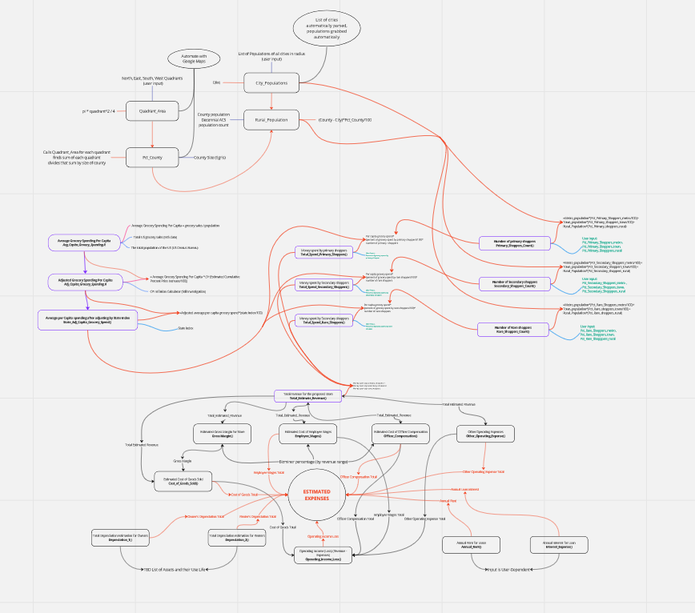
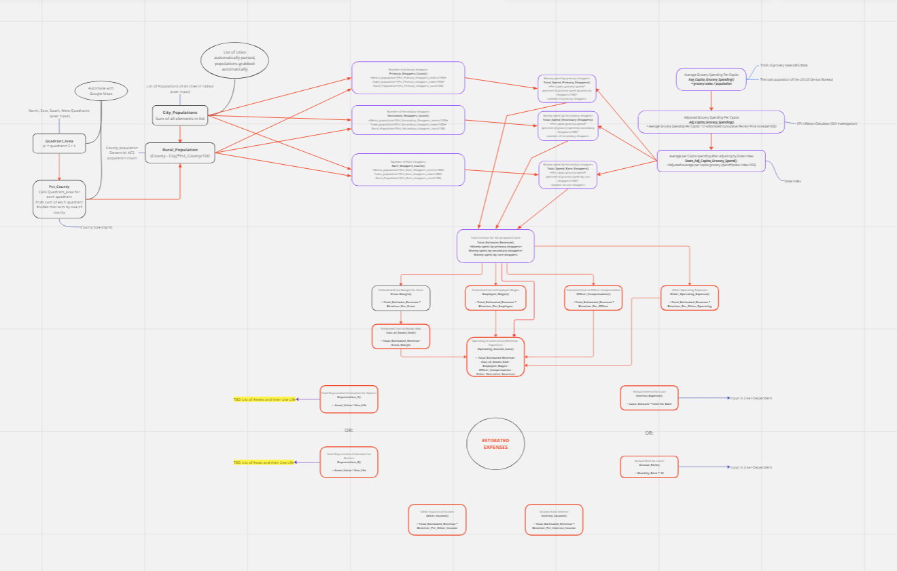

# Testing out an example data frame with DT
cities <- c("Ames", "Des Moines", "Waterloo", "Chicago")
lat <- c(42.034534, 41.619549, 42.499504, 41.881832)
lng <- c(-93.620369, -93.598022, -92.358665, -87.623177)
test_cities <- data.frame(cities, lat, lng)DSPG Work
Weekly Mission
The undergraduate interns finished converting the excel functions as R functions and went through the testing for each of them. This also included exploring what packages and tools existed that could aid the work of some of the functions aimed at automating the workflow. After exploring and testing their functions, the next task delegated to them was to fix the Miro flowchart which documented how their functions connected to each other. The following image shows how the first flowchart was drafted.

Agreeing on the right notation, the students came up with the following version which is much easier to read and was also shared with the client.

The last portion of the flowchart remains to be connected since team members just received answers to their questions about the utility of those functions in the meeting we had with the client. We are also now moving towards phase three of the project which focuses on optimizing the development of the R functions and the development of a tool. The project lead and I are working to design how each of the sections will integrate into a single interface.
Objectives
- Review the function work for any bugs in the
DSPGGrocerypackage. - Complete the Miro diagram of function dependencies.
- Set up a meeting with the client to discuss the function operations material.
- Investigate software possibilities for the deliverable.
- Determine a plan to optimize the converted R functions.
Additional Work
- Continue working through basic courses for C++.
- Develop a template for an R Shiny app.
- Learn more about
Javascriptintegration with the R Shiny app. - Work on learning the
Google Places APIto create functions.
Below is a test data frame which I’ve made to test the Google Places API. I plan to be uploading the functions for display in the following week’s blog.
knitr::kable(test_cities)| cities | lat | lng |
|---|---|---|
| Ames | 42.03453 | -93.62037 |
| Des Moines | 41.61955 | -93.59802 |
| Waterloo | 42.49950 | -92.35867 |
| Chicago | 41.88183 | -87.62318 |
The current version of my function that’s being used to pull multiple location data is below.
places_multiloc_pull <- function(df, name = NULL,
search_string = NULL,
keyword = NULL,
lat = c(df[,2]),
lng = df[,3],
radius = 6500,
type = NULL,
api_key = Sys.getenv("PLACES_KEY"),
place_type = NULL) {
result_list <- list()
for (i in 1:dim(test_cities)[1]) {
start_time <- Sys.time()
string <- sprintf("df_%f", i)
spring <- noquote(string)
spring <- googleway::google_places(search_string = search_string,
name = name,
location = c(lat[i], lng[i]),
radius = radius,
keyword = keyword,
key = api_key)
Sys.sleep(2)
result_list <- append(result_list, list(spring$results))
end_time <- Sys.time()
total_time <- end_time - start_time
print(sprintf("Execution time for iteration %d is %.2f", i, total_time))
}
return(result_list)
}